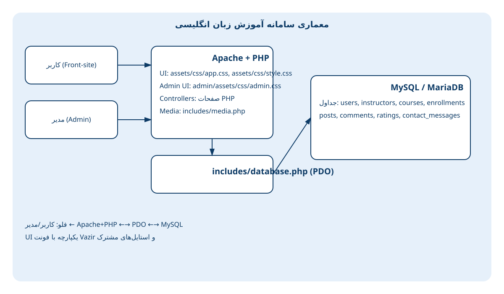
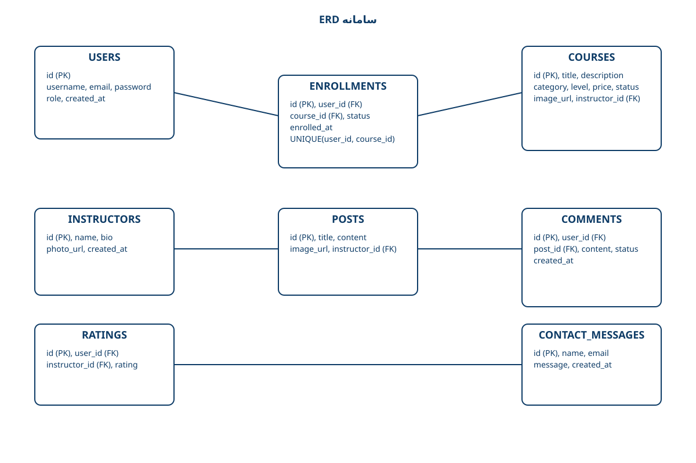

سایت مدیریت و آموزش زبان انگلیسی
پروژه: english_language_learning
دانشگاه: سجاد | مقطع/رشته: کاردانی نرمافزار کامپیوتر
استاد راهنما: شکرانی | نگارنده: زیور پرگاتی
تاریخ: 1404/07/04

پروژه: english_language_learning
دانشگاه: سجاد | مقطع/رشته: کاردانی نرمافزار کامپیوتر
استاد راهنما: شکرانی | نگارنده: زیور پرگاتی
تاریخ: 1404/07/04
این پروژه یک سامانه وب برای آموزش زبان انگلیسی است که شامل وبسایت کاربری و پنل مدیریت میباشد. کاربران میتوانند دورهها را مرور و ثبتنام کنند؛ مدیر سیستم محتوای آموزشی (اساتید، پستها، دورهها)، تعاملات (نظرات، امتیازات، پیامها) و گزارشهای تحلیلی (ثبتنام کاربران، عملکرد اساتید) را مدیریت میکند. معماری پروژه مبتنی بر PHP و MySQL با استفاده از PDO و ساختار ساده و قابل نگهداری است. در این پایاننامه، نیازمندیها، معماری، طراحی پایگاهداده، امنیت، تست، استقرار، مقیاسپذیری، و مسیر توسعه آینده تشریح شده است.
نیاز به بستری سبک، RTL، قابل استقرار روی XAMPP برای مدیریت دورههای زبان انگلیسی، ثبتنام کاربران، و گزارشگیری مدیریتی. هدف، ارائه تجربه یکپارچه برای کاربر و ادمین و پوشش جریانهای کلیدی است.
پلتفرمهای آموزش زبان نظیر Coursera/Udemy (دورههای عمومی) و Duolingo/Memrise (یادگیری تعاملی) هریک بر بخشی از نیازها تمرکز دارند. سامانه حاضر با رویکرد سبک و قابلاستقرار محلی (XAMPP) و تمرکز بر مدیریت محتوای بومی، گزارشگیری ادمین و ثبتنام دورهها برای سناریوهای سازمانی/آموزشگاهی مناسبسازی شده است. نسبت به CMSهای عمومی، ساختار دیتابیس اختصاصی (enrollments/ratings/comments) و گزارشهای تحلیلی دقیق بر کاربران/اساتید ارائه میکند.
روش تحقیق مبتنی بر مهندسی نرمافزار تکرارشونده است: گردآوری نیازمندیها، طراحی معماری و دیتابیس، پیادهسازی افزایشی (ویژگیهای کاربر/ادمین/گزارشها)، و اعتبارسنجی از طریق تست کارکردی. انتخاب فناوریها بر اساس در دسترس بودن، سازگاری با محیطهای آموزشی، و هزینه نگهداری انجام شده است. معیارهای ارزیابی شامل کارایی (پاسخگویی کوئریها)، امنیت پایه (PDO/Hash)، و کیفیت UI (همسانی سبک و ریسپانسیو) بودهاند.
includes/database.php برای اتصال، صفحات PHP برای منطق و نما، includes/media.php برای مسیر تصاویر.جداول: users، instructors، courses، enrollments، posts، comments، ratings، contact_messages. کلید یکتا در enrollments (user_id, course_id)، قیود خارجی با حذف آبشاری، و ایندکسهای پیشنهادی برای کارایی.
| جدول | ستونهای کلیدی |
|---|---|
| users | id, username, email, password, role, created_at |
| courses | id, title, description, category, level, price, status, image_url, instructor_id |
| enrollments | id, user_id, course_id, status, enrolled_at (UNIQUE user_id,course_id) |
| instructors | id, name, bio, photo_url, created_at |
| posts | id, title, content, image_url, instructor_id, created_at |
| comments | id, user_id, post_id, content, status, created_at |
| ratings | id, user_id, instructor_id, rating, created_at |
| contact_messages | id, name, email, message, created_at |
enroll.php → process_enrollment.php (درج یا فعالسازی دوباره).admin_enrollments_report.php + جزئیات user_enrollments.php.admin_instructors_report.php + جزئیات instructor_overview.php.Prepared Statements، هش رمز عبور، کنترل نقش ادمین در auth_check.php، اعتبارسنجی آپلود، مدیریت سشنها.
resolveCourseImage برای نگاشت تصاویر PNG/JPG.تست دستی سناریوهای کلیدی (ثبتنام، گزارشها، تصاویر)، مدیریت استثناهای PDO، و اصلاح ناسازگاریهای SQL.
english_language_learning.sql + اجرای admin/create_enrollments_table.sql.includes/database.php و اجرای admin/setup.php.عدم ORM، احراز هویت ساده، نیاز به سیاستهای قویتر آپلود و تستهای خودکار بیشتر.
معماری ساده و توسعهپذیر با UI یکپارچه نیازهای سامانه آموزشی سبک را برآورده میکند و با افزودن ماژولهای پرداخت، محتوای تعاملی و DevOps آماده تولید خواهد بود.

